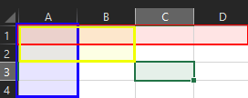

Les objets Range sont des objets complexes qui contiennent les cellules Excel. Ici, les cellules sont aussi un objet range. Les valeurs, les formules et le formatage sont toute dans les cellules d’un. Pour vous aider à comprendre, regardez la photo suivante.

Les colonnes, les rangées, les sélections de cellules sont en fait des range, même la cellule singulière. Encore plus complexe est que vous pouvez récursivement accéder aux range. Il est donc possible de demander une colonne d’une sélection de ranger, ou d’inutilement demander la première colonne de la première colonne a l’infini sans rien changer. Cette façon de procéder peut sembler étrange, mais elle a ses avantage et inconvénient.
Avant de commencer vous devez avoir une Application d’ouverte, un Workbook d’ouvert et un Woksheet de sélectionner :
using System;
using Excel = Microsoft.Office.Interop.Excel;
namespace ExcelTest
{
class Program
{
static void Main(string[] args)
{
string AppPath = AppDomain.CurrentDomain.BaseDirectory;
string filePath = AppPath + "test.xlsx";
Excel.Application app = new Excel.Application();
app.DisplayAlerts = false;
Excel.Workbook workBook = app.Workbooks.Open(filePath);
Excel.Worksheet worksheet= workBook.Worksheets[1];
//Manipulation des donner
workBook.Save();
workBook.Close();
}
}
}
Accès au Range et Cells
On peut obtenir un range par les propriétés suivante :
Excel.Range range = worksheet.Rows;
Il vous retournera tout les cellules et donc le WorkSheet au complet
Excel.Range range = worksheet.Rows[1];
Ici nous avons toutes les cellules de la première ranger, pour un .xlsx is s’agit de 16384 cellules
Excel.Range range = worksheet.Columns;
Il vous retournera tout les cellules et donc le WorkSheet au complet
Excel.Range range = worksheet.Columns[1];
Ici nous avons toutes les cellules de la première colonne, pour un .xlsx il s’agit de 1104876 cellules
Excel.Range range = worksheet.Cells;
Il vous retournera tout les cellules et donc le WorkSheet au complet
Excel.Range range = worksheet.Cells[1,1];
ou
Excel.Range range = worksheet.Cells[“A1”];
Vous retournera la cellule à la coordonnés.
Les coordonnés sont toujours [ranger,colonne] avec un index de base de 1.
Excel.Range range = worksheet.Range[worksheet.cells[1,1],worksheet.cells[2,2]];
Ou
Excel.Range range = worksheet.Range[“A1”,”B2”];
Dans ses deux cas, nous obtenons un carré de A1, A2,B1,B2
Étant donné la récursivité des Ranges, je n’est pas tout explorer en détail, mais sache qu’il est possible de faire la commande suivante.
Excel.range range = worksheet.Range[“A1”,”B2”].Columns[1].Cells;
L’objet range contiens ainsi les cellules de A1 a A2 même si on est partie d’un range de A1,A2,B1,B2.
Plusieurs Ranges
Il est aussi possible de sélectionner plusieurs Range avec worksheet.Ranges, mais nous allons-nous tenir à une Range à la foi.
Cells
Les cellules sont les valeurs de base et c'est là que les informations se trouvent, c’est-à-dire les formules, le texte, les formats. Etc.
Par exemple, prenez une cellule Excel A1, contenant le texte « Bonjour ».
Nous accédons a la cellule par :
Excel.Range cellule = Worksheet.Cells[1,1];
Si vous accéder l’objet Cells encore de cellule, vous allez avoir plusieurs choix
Cellule.Cells.Value2;
Va retourner un objet dynamique, si vous l’imprimez dans la console vous allez voir qu’il s’agit du string « Bonjour ».
Si le texte avait été un chiffre comme 1; il aurait retourné un Integer avec la valeur de 1.
Si la Cellule est le résultat d’une formule, la valeur va être le résultat et non la formule de la cellule.
cellule.Cells.Formula
Va retourner le string de la formule Excel. Ci il n’y a pas de formule, mais un texte elle va retourner le texte.
Accès par Range Utiliser
Excel a une valeur cachée qui lui dit si la cellule est utilisée. Toute altération à la cellule va cocher cette valeur comme utiliser. C’est avec cela que l’interface Graphic Excel vous donne des barres déroulantes pour vous rendre jusqu’à la cellule la plus loin comme si elle était le coin de la feuille même s’il y a d’autres cellules.
Le problème avec les autres accesseurs c'est que si vous demander le Range, vous allez avoir toutes les cellules qui dépasse la dernière cellule utiliser. Si vous voulez scanner le fichier, cela va augmenter drastiquement le temps. Heureusement nous pouvons spécifier que nous voulons les cellules à l’intérieur du carré former par la première cellule et la dernière cellule utiliser.
Simplement passé par la propriété UsedRange. Vu que le Range est récursif, vous pouvez utiliser avec les accesseurs précédant.
Excel.Range range = Worksheet.Usedrange.Ranges;
Si la dernière cellule utiliseé est C3, le Range contiendra, A1,A2,A3,B1,B2,B3,C1,C2,C3.
Si le WorkSheet est vide, la seule cellule retourner sera A1 même si elle n’a pas été touchée encore.
Copier/Coller
Vous pouvez copier-coller un range avec la méthode Copy() et pasteSpecial().
Noter que c’est méthode utilise le clipbord d’Excel(équivalent à copie collée).
range.Copy();
Sélectionner un nouveau range et puis :
range.PasteSpecial();
utilisation du clipbord peut causer des conflits en Multithreading alors faits attention.
Un Range peut-être inséré dans un autre comme si nous étions sur l’interface graphique. Il faut simplement avoir copié le Range au clipbord avec la méthode copy().
range.Copy();
worksheet.Cells[1, 5].insert(Excel.XlInsertShiftDirection.xlShiftToRight);
Si vous n’avez pas copié, une insertion vide sera faite. Utile pour créer de l’espace vide!
Effacer
Une range peut aussi être effacée. Sélectionner le range et appeler Delete()
range.Delete()
Accès et modification des donner.
Vous pouvez faire une boucle et allez parcourir chaque Cells d’un Range et modifier la valeur, mais la nature de l'objet Range rend la procédure lente exponentiellement avec la quantité de cellules à parcourir.
Vous ne me croyez pas, essayez-le!
Il y a en fait une solution.
Quand on obtient une Value2 ou Formula, on obtient un objet dynamique, mais on peut demander Value2 Formula pour un range au complet.
Ils seront retournés en tant que Array 2D avec une base 1.
Considère le code suivant :
Excel.Range range = worksheet.Range[worksheet.Cells[1,1],worksheet.Cells[2,4]];
object[,] array = range.Cells.Value2;
object[1,1] va contenir la même valeur que worksheet.cells[1,1].value2
et ainsi de suite.
Vous pouvez modifier chaque objet du Array 2D pour ensuit les renvoyer dans la range de la façon suivante.
Range.Cells.Value2 = array;
Si vous n’oubliez pas de sauvegarder, les modifications seront faites.
Noter que prendre les Formule et les déplacés de cette méthode ne va pas ajuster la valeur des positions dans la formule puisqu’ils sont copiés en string.